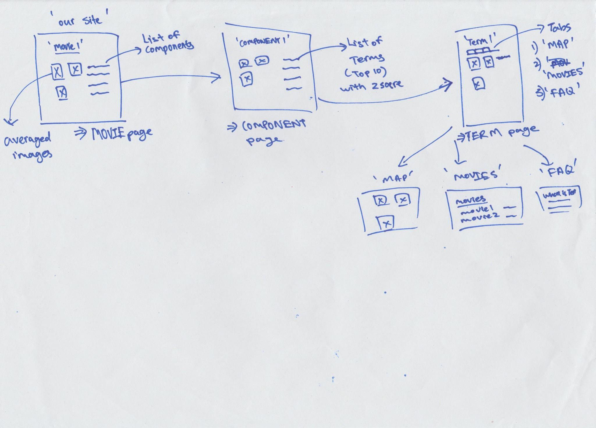
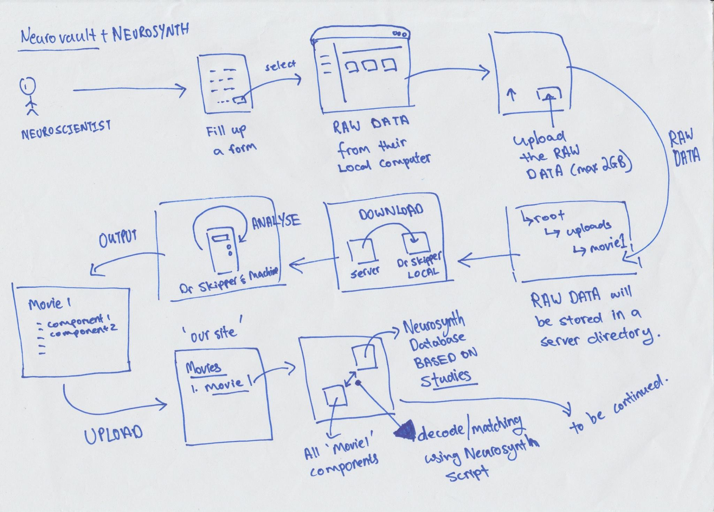
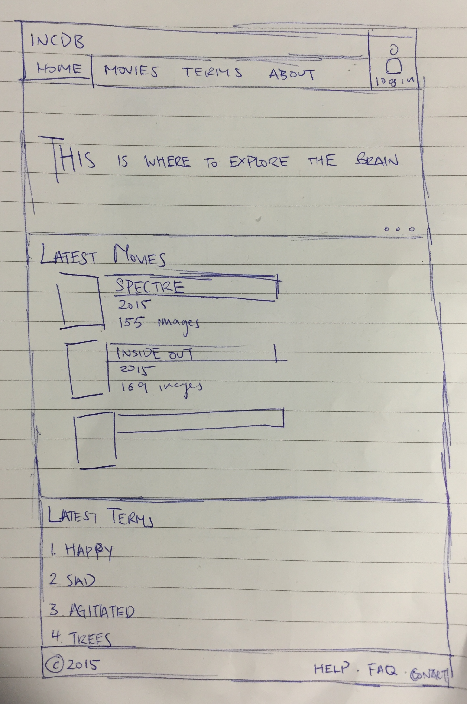
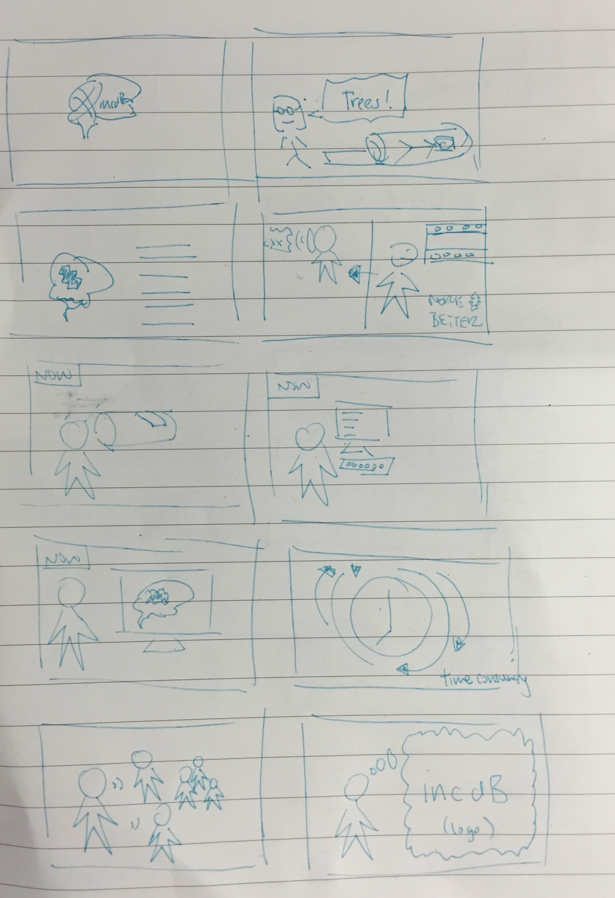
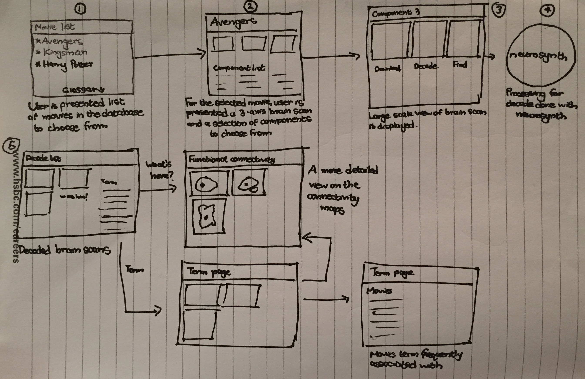
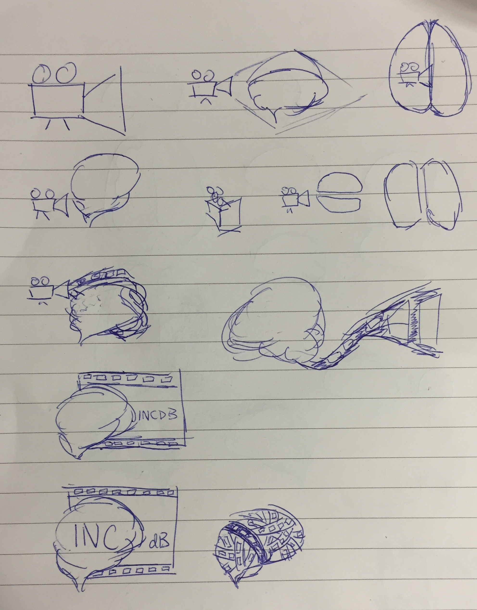
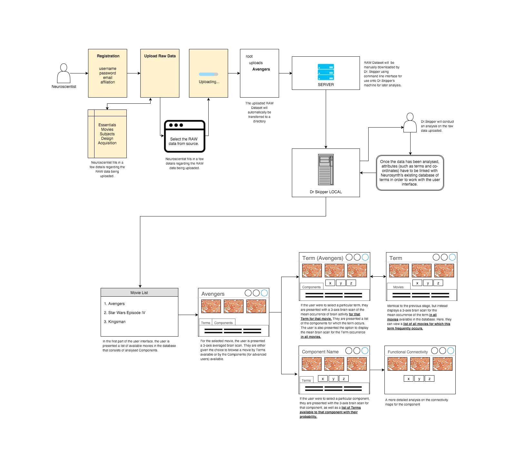
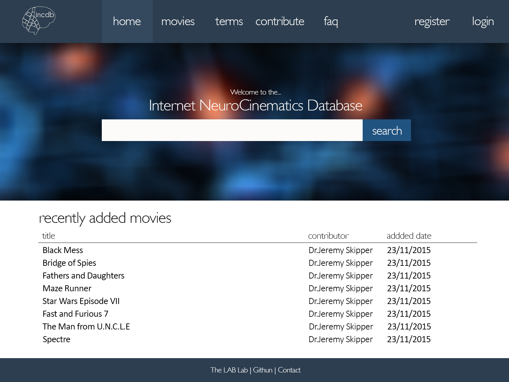
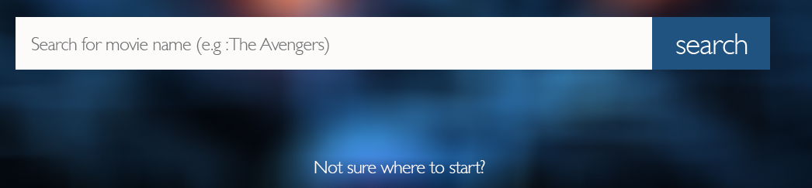
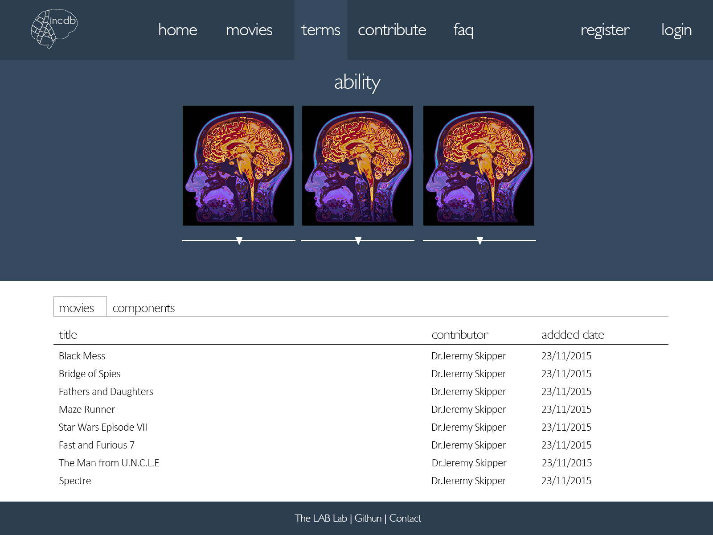

Design
Stage 1: Sketches
After our first meeting with Dr.Skipper, we decided that each group member need to spring up their own interpretation of the design for the website with a simple sketch. We would then discuss on the ideas and objectives we had in mind from these drawings and upon these sketches, we would build a basic foundation for the website. The followings are our sketches for the project. They include flowchart of the application and logo for the project.






Flowchart
We created a flowchart to describe the steps and orders involved for INcDb based on our initial sketches.

Stage 2: Wireframe
After a group discussion on our sketches, we decided to implement these ideas to create a simple flow chart of the website. We wanted to develop a better understanding to how we, as users of the website, would get around. That’s why we constructed a simple wireframe using the sketches to build a simple user interface using flowchart software (draw.io), and outline of the website. The astehetic design of the wireframe is kept to the minimal as the focus is on the flow and layout of the application. The full wireframe can be found at https://drive.google.com/file/d/0B_L13V4oU0QTOUZKaHlGalpCdk0/view?usp=sharing?
Stage 3: Photoshop Mockups
Once we finalised the wireframe and got our approval from Dr.Skippper, we transfer these ideas that were developed by pencil and paper to the screen. We browsed through existing websites to identify colour schemes and fonts for inspiration for the design of the website.
For the basis of the design of our project, we wanted to take a different approach to how we present Neuroscience data to the general user. One consideration we took into account to a great extent is that one of the primary target of users for this website were going to be general audiences with little-to no experience in Neuroscience, and having to deliver such a project to explain MRI brain scans to this segment was going to be a challenging one.
That’s why our main target was to approach this design with as much simplicity as possible, without affording to cut down on the technical aspects of the project as Neuroscientists are expected to be another target audience for this website as well. Our main target behind the design of this website was to provide a flat and fluid user interface with simple colours and light fonts that give the website a modern feel to the project that does not radiate too much of a complex background to the visitor.
From observation of the navigation bar, the design follows the simple principle of notifying the user of the current location by highlighting the relevant pane. As for the rest of the navigation bar, it provides relevant options that provide the objectives of the website. ‘Home’ to take the user back to the main page, ‘Movies’ to browse the collection of Movies available, ‘Terms’ to browse brain scans of particular Terms highlighted in Movies, ‘Contribute’ for other Neuroscientists to contribute to the project, ‘FAQ’ to those in doubt of the website, and ‘Login’ to log back in the service.

We try to make the design convenient by providing subtle pointers on getting around the website. One such example include the search-bar placeholder which explains to the user what they can search for using the tool.
If users are still unsure of how to browse around the website, we added a simple link to redirect users to a tutorial pane (FAQ) to explain the background of the project and its functionality.

The second screenshot presents the general interface when manipulating with the image data for a particular Movie, Term or Component. We provide only the necessary tools to the user, which is to browse the brain data by the x, y and z axes. Each slider controls the designated the field of view for the scan. We keep this interface consistent across the website so the user will be familiar with the controls they are toying with.

Another thing we took into consideration is the ‘Mapping’ principle to indicate the user the relevant page they are in with accordance to the type of brains scan they are currently looking at. For example in the screenshot above, the page is presenting the brain scan for the Term ‘ability’. Since this is a Term, the ‘Term’ option is highlighted in the navigation bar above.
The information below the brain scan presents two main categories that the user can browse through. Either ‘Movies’ or ‘Components’. The Movies pane presents a list of other Movies that are highly associated with the selected Term, and ‘Components’ (for Neuroscientists) presents each individual Components that has the highest probaility of association with the selected Term.
Stage 4 : HTML/CSS Prototyping
With our finalised Photoshop Mockups, we started developing a HTML/CSS design prototype. The aim of the prototype was to experiement with the UI components of the Bootstrap framework. By building a clickable prototype, the group and stakeholders will have a clear idea on the feel and look of the project. The source code of INcDb Mockup is at https://github.com/UCL-CS35/incdb-mockup